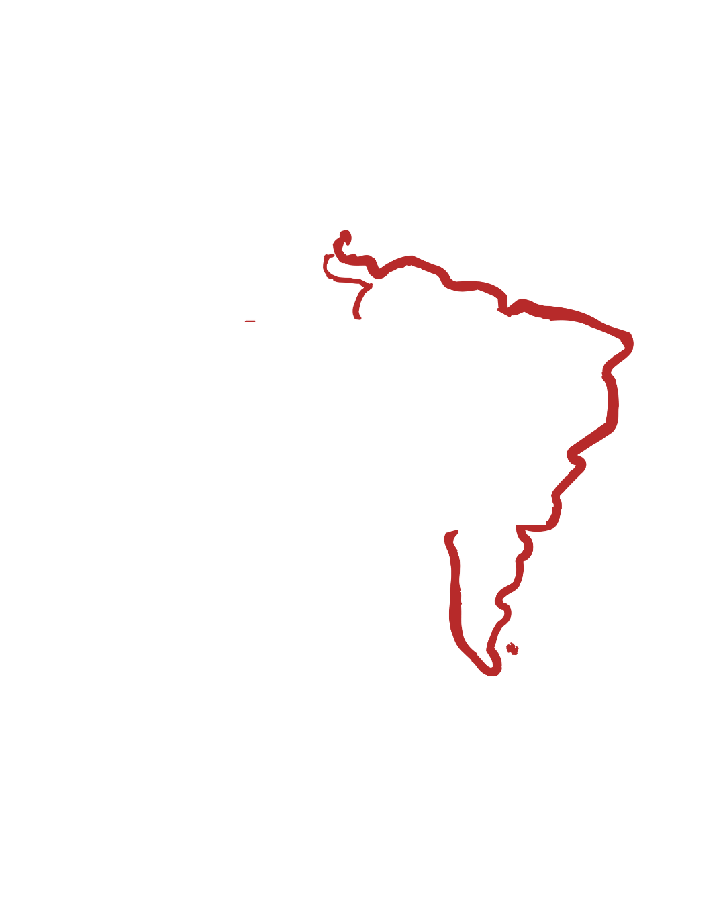
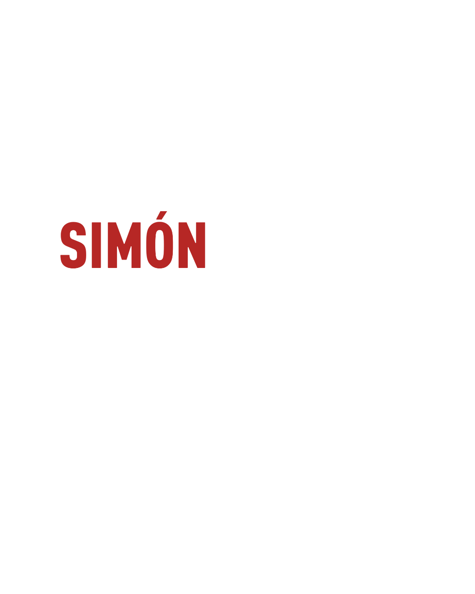
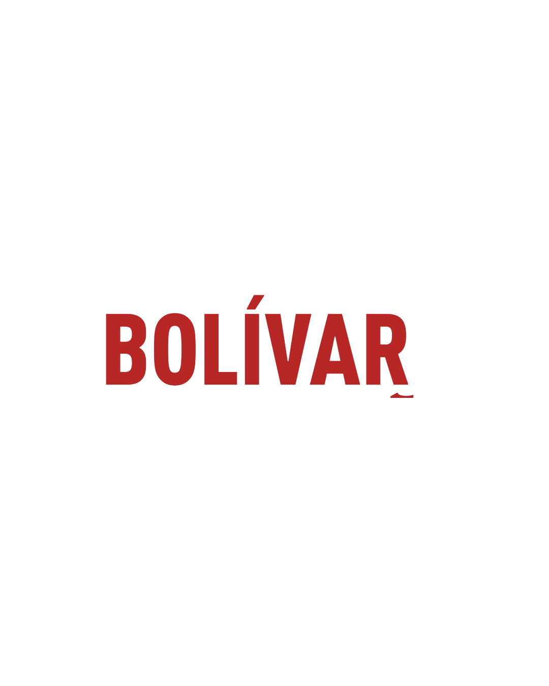

La Bolívar con vos · Agrupación Simón Bolívar, FTS UNLP
RESULTADOS
LO QUE SE VIENE
Ver fechas



Agrupación Simón Bolívar · FTS UNLP
Los trámites contados como se los contaríamos a una compañera, las fechas que no te podés perder, y un organizador para tu cursada. Sin registrarte y sin dar datos.